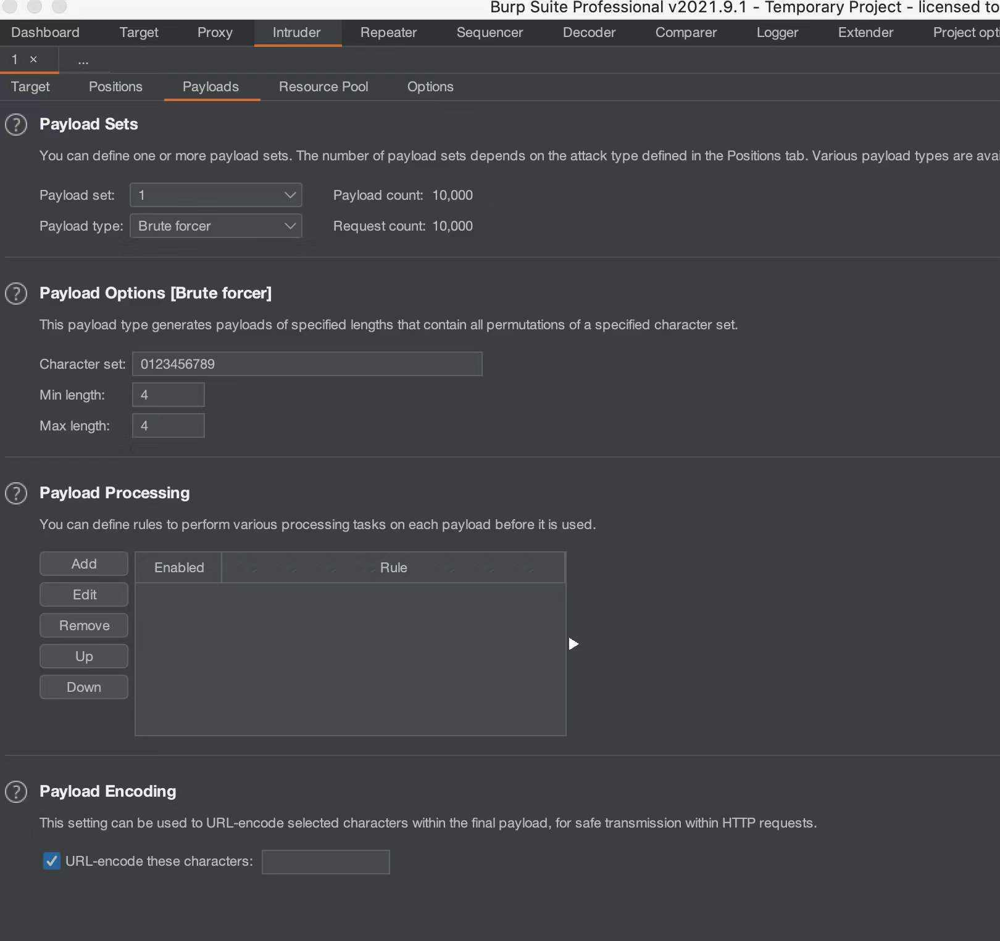

- 00 导读 解读OWASP Top10 2021.md.html
- 00 开篇词 从黑客的视角找漏洞，从安全的角度优雅coding.md.html
- 01 失效的访问控制：攻击者如何获取其他用户信息？.md.html
- 02 路径穿越：你的Web应用系统成了攻击者的资源管理器？.md.html
- 03 敏感数据泄露：攻击者如何获取用户账户？.md.html
- 04 权限不合理：攻击者进来就是root权限？.md.html
- 05 CSRF：为什么用户的操作他自己不承认？.md.html
- 06 加密失败：使用了加密算法也会被破解吗？.md.html
- 07 弱编码：程序之间的沟通语言安全吗？.md.html
- 08 数字证书：攻击者可以伪造证书吗？.md.html
- 09 密码算法问题：数学知识如何提高代码可靠性？.md.html
- 10 弱随机数生成器：攻击者如何预测随机数？.md.html
- 11 忘记加“盐”：加密结果强度不够吗？.md.html
- 12 注入（上）：SQL注入起手式.md.html
- 13 注入（下）：SQL注入技战法及相关安全实践.md.html
- 14 自动化注入神器（一）：sqlmap的设计思路解析.md.html
- 15 自动化注入神器（二）：sqlmap的设计架构解析.md.html
- 16 自动化注入神器（三）：sqlmap的核心实现拆解.md.html
- 17 自动化注入神器（四）：sqlmap的核心功能解析.md.html
- 19 失效的输入检测（上）：攻击者有哪些绕过方案？.md.html
- 20 失效的输入检测（下）：攻击者有哪些绕过方案？.md.html
- 21 XSS（上）：前端攻防的主战场.md.html
- 22 XSS（中）：跨站脚本攻击的危害性.md.html
- 23 XSS（下）：检测与防御方案解析.md.html
- 24 资源注入：攻击方式为什么会升级？.md.html
- 25 业务逻辑漏洞：好的开始是成功的一半.md.html
- 26 包含敏感信息的报错：将安全开发标准应用到项目中.md.html
- 27 用户账户安全：账户安全体系设计方案与实践.md.html
- 28 安全配置错误：安全问题不只是代码安全.md.html
- 29 Session与Cookie：账户体系的安全设计原理.md.html
- 30 HTTP Header安全标志：协议级别的安全支持.md.html
- 31 易受攻击和过时的组件：DevSecOps与依赖项安全检查.md.html
- 32 软件和数据完整性故障：SolarWinds事件的幕后⿊⼿.md.html
- 33 SSRF：穿越边界防护的利刃.md.html
- 34 Crawler VS Fuzzing：DAST与机器学习.md.html
- 35 自动化攻防：低代码驱动的渗透工具积累.md.html
- 36 智能攻防：构建个性化攻防平台.md.html
- 大咖助场 数字证书，困境与未来.md.html
- 春节策划（一） 视频课内容精选：Web渗透测试工具教学.md.html
- 春节策划（三） 一套测试题，看看对课程内容的掌握情况.md.html
- 春节策划（二） 给你推荐4本Web安全图书.md.html
- 结束语 无畏前行.md.html
- 捐赠
03 敏感数据泄露：攻击者如何获取用户账户？
你好，我是王昊天。
“人只要奋斗就会犯错。”
这是一个非常好的句子，出自歌德的代表作，长篇诗剧《浮士德》。
一千个读者有一千个哈姆雷特，每个人对这句话的理解都不尽相同。悲观的人或许会理解为“人努力了就要犯错误，所以就不要再努力了”；但是从我的经历看来，我更愿意相信它是在说“人努力成长本身就是试错的过程，犯错是难免的，不要因为害怕犯错而停止努力”。
为什么要提到这句话呢？因为系统如人——是有生命力的，系统随着不断更新会出现新的问题，甚至有时候问题本身就是功能设计的一部分。很多敏感数据泄露风险的源头，一部分出现在技术层，一部分出现在设计层，正如我们上面所讲，做得多了，难免会犯错。
敏感数据泄露
什么是敏感数据泄露呢？简单来说，如果我们的应用系统向一个未得到访问授权的用户暴露了敏感信息，那么这就是一种敏感数据泄露风险。
拓展讲一讲，设计上或者技术上有很多意外的失误会导致数据泄露。并且这种错误的严重级别分布也很宽泛，具体要取决于应用系统执行的上下文、被泄露敏感数据的类型以及攻击者从中获取的收益，这里我们列举一些数据类型。
比如个人信息分类，包括即时通讯消息、银行卡信息、交易信息、健康信息、地理位置信息以及订单信息等；系统状态信息分类，包括操作系统信息、环境变量信息、第三方包信息等；还有网络及配置信息、应用系统代码及内部状态信息、元数据信息等等。
不仅数据本身涉及分类分级，对于不同的群体而言，数据的敏感性也是不同的，每个用户群体对于数据保护有着不同的诉求。他们可能是应用系统开发者、应用系统引入的第三方数据的原始拥有者、应用系统管理员（包括业务层、应用层、系统层和运维层）、应用系统的直接用户等。
在了解数据的多样性以及使用群体的多样性之后，我们接下来看一下数据泄露方式的多样性。
首先，在代码层面可能会直接将敏感数据插入到某个消息或者资源中，这个携带着敏感数据的消息或资源被未授权的用户成功访问就会导致数据泄露。
其次，可能会由于系统内部错误直接将敏感数据插入到资源文件中，比如Web脚本错误泄露应用系统的全路径。
再或者，虽然在代码层面对于敏感数据有着良好的管理，但是由于编码问题，可能导致敏感数据资源被意外地展示在攻击者面前。
可以看到，敏感数据泄露并非单一的技术问题 ，它不仅具备多种风险形态，有时候更是设计层面考虑不全面导致的。
接下来我们一起来看看有哪些比较典型的风险场景：
1. 应用系统逻辑设计问题- 如下代码检测了用户名及密码的正确性并且给出用户结果反馈：
my $username = param('username');
my $password = param('password');
if ( IsValidUsername($username) )
{
if ( IsValidPassword($username, $password) )
{
print "Login successful";
}
else
{
print "Login failed - incorrect password";
}
}
else
{
print "Login failed - incorrect username";
}
上述代码中，对于不同的账户名、密码错误组合给出了不同的信息反馈，这样的设计使得潜在攻击者能够获得足够的信息来判断login函数的返回值，因此攻击者能够使用暴力破解的方式来遍历合法的用户名，从而可以进一步尝试暴力破解或者通过社工库撞库等方式获得对应的密码。不可否认的是，这样的设计是希望给用户提供更多友好性，但也为潜在攻击者提供了友好性，这里推荐的实现方案是如下这种：
print "Login failed - incorrect username or password"
这里将错误输出设定为同一种，这样在没有丧失用户友好性的同时强化了安全性。
2. 异常处理问题- 如下代码尝试建立一个数据库连接，并且将exception输出：
try {
openDBConnection();
} catch (Exception $e) {
echo 'Caught exception:', $e->getMessage();
}
上述代码中，如果由于网络原因（常见）或者其他原因导致Exception的发生，会在用户访问的页面出现Exception信息，这其中就可能包含数据库连接的相关信息。
3. 应用部署问题- 如下代码通过使用一个Debug标识符来进行程序执行逻辑决策：
<% if (Boolean.getBoolean("debugEnabled")) { %>
User account number: <% =account_num %>
<% } %>
上述代码中，如果在部署应用过程中未将debugEnabled设置为False，敏感的调试会被输出到用户能够访问的页面。
4. 权限获取问题- 如下代码为了给用户提供更符合用户需求的服务，希望通过获取坐标来判断用户的地理位置。
<uses-permission android:name="android.permission.ACCESS_FINE_LOCATION"/>
在这种场景中，通过对getLastLocation()的调用，可以获得应用所需的坐标信息：
locationClient = new LocationClient(this, this, this);
locationClient.connect();
Location userCurLocation;
userCurLocation = locationClient.getLastLocation();
...
事实上，为了满足应用的地理位置获取需求，ACCESS_FINE_LOCATION这个权限有些过高了，有时候我们只需要使用ACCESS_COARSE_LOCATION即可满足需求。当然这里我们只是举个例子，很多应用对于权限的滥用远不止于权限颗粒度，随着法律法规的健全，应用开发过程中我们对于权限的申请和使用需要越来越谨慎。
案例实战
2021某攻防演练行动中的某集团ERP系统
该漏洞是一个由程序设计逻辑问题引发的敏感数据泄露漏洞，通过官网链接或者URL地址爆破，很容易找到密码找回功能界面，这里我们可以首先看一下该界面，提供了通过手机验证码来更新密码的功能：
在尝试漏洞挖掘过程中，如果能够根据返回结果的差异性来判断函数内部的执行逻辑，对攻击者而言是非常有利的信号，因为这意味着黑盒的动态测试转变为白盒测试，大幅降低了攻击难度。
因此我们首先尝试不同的输入来探测应用系统返回结果：
可以看到返回的报错信息是足够清晰的，能够帮助我们判断每一次输入的正确性，这符合我们这节课分享的第一种典型风险场景。
接下来我们需要找到真实存在的用户账号以及对应手机号码，一种可行的途径是通过社会工程学获得，另一种方式是查找公开资源。
由于公开资源的查找比较方便快捷，这里先选择该思路进行尝试，通过一些简单的查询可以找到一份该系统的使用说明视频，视频中包含了用户登录过程，虽然登录过程的密码是以星号显示的，但是用户名可以确定，并且登录之后视频中展示的账号信息配置界面包含了手机号，至此我们已经找到真正存在的用户名及手机号码：
填入正确的用户名和手机号，点击获取手机验证码，功能一切正常。接下来我们只要猜测出手机验证码即可。按照一般应用系统的设计规则，验证码的范围应该主要有两种：
- 0000-9999
- 000000-999999
我们先随机输入一个格式正确的验证码，并且使用Burp进行请求拦截，可以截获该HTTP请求，随后使用Burp的请求重放功能，将验证码部分设置为payload，范围设置为0000-9999，开始爆破即可。

随着爆破结束，查看Burp的请求结果。结果中所有的请求结果长度都是一致的，说明并未找到正确的验证码。这里存在两种可能性，一种可能性是验证码为6位而非4位，另一种可能性是验证码已经过期。
这时我们只能逐一排查，将payload范围选择为000000-999999后重新启动重放攻击。大约3个小时后我们终于成功爆破出正确的验证码，本次攻击的访问控制绕过部分宣告成功。
虽然本次攻击过程仅仅尝试了6位验证码的攻击，但是需要知道的是一般验证码的有效期大概在10～30分钟，本次攻击的系统并不具备该限制，但是即使未来你检测的目标系统存在该限制，你仍然可以通过多线程并发爆破的方式在有限的时间内成功碰撞出正确的验证码。
那么截止到这里，我们已经在实战中成功验证了一个典型的风险模型场景，并且该风险场景包括业务敏感数据泄露以及程序逻辑设计不当两种安全风险。
检测及防御方案
由于数据泄露风险的特殊性质，主要是很多时候风险来源是逻辑层面、设计层面或者权限层面的安全问题，导致传统的防御方案和扫描器等很难发挥作用，也正因如此导致其成为了排名第一的风险种类，因此我们需要引入新型安全技术及工具来发现这类潜在风险。
在开发及设计阶段，可以考虑引入威胁建模及审计工具，来协助我们发现在逻辑层面以及设计层面引入的安全风险。通过对系统功能以及业务流程的威胁建模，可以帮助我们消除许多常见的安全隐患。
对于在开发中以及线上运营中的系统，我推荐你运用动态安全分析工具以及静态安全分析工具。以BAS（Breach & Attack Simulation Platform，自动化模拟攻击）为首的动态安全分析工具能够更全面地覆盖系统功能及接口，同时发现深层次安全问题；而以SAST为首的静态安全分析工具则可以从代码脆弱性角度帮助我们发现并消除一些安全隐患。
总结
敏感数据泄露即使在今天仍然是相当严重且普遍存在的一个风险点，主要原因是数据泄露并非一个纯粹的技术性问题，很多时候与业务流程、功能设计都息息相关。
单纯从漏洞危害程度来看，敏感数据泄露主要分为两种，一种是业务敏感数据泄露，另一种是技术敏感信息泄露。业务敏感数据的泄露危害性是巨大的，会直接影响到公司的品牌和业务运行；技术敏感信息泄露往往不能对应用系统安全性产生直接威胁，但配合其他漏洞的综合利用可以实现1+1>2的效果，其他漏洞利用过程所需的重要信息也许就隐藏在泄露的技术敏感信息中。
这节课我们首先重点探讨了几种常见的非技术性敏感数据泄露场景：
- 应用系统设计阶段逻辑问题；
- 异常处理输出不当；
- 应用部署时未关闭调试开关；
- 权限获取过多。
接下来我们用一个2021年真实的护网行动案例，带你感受了现实场景的漏洞挖掘和利用。某世界500强集团的ERP系统，存在典型的应用系统设计阶段逻辑问题，通过输入和输出信息，攻击者可以判断出开发者的内部函数代码逻辑，进而不断探测出敏感数据，完成账户控制。
最后，针对敏感数据泄露的防御方案，我们列举了包括BAS、SAST、威胁建模在内的几种常见的有效防御方案。
思考题
通过本节课的探讨，你可以在实际场景中找到一个典型的潜在敏感数据泄露风险点吗？
欢迎在评论区留下你的思考，我们下节课再见。
© 2019 - 2023 Liangliang Lee. Powered by gin and hexo-theme-book.